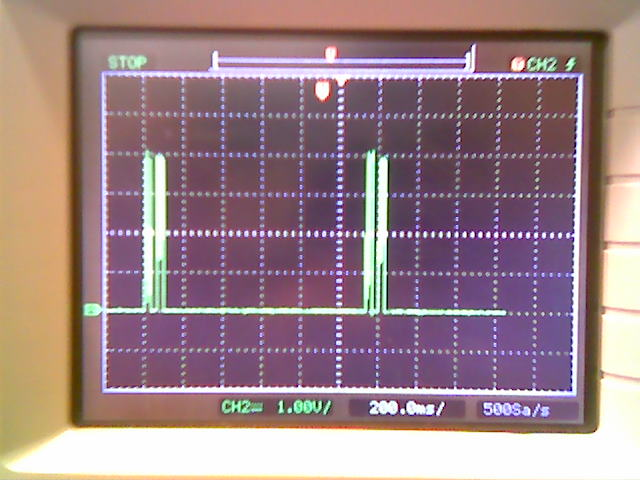
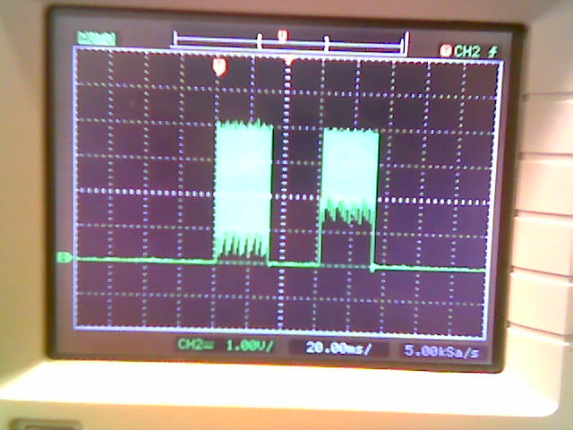
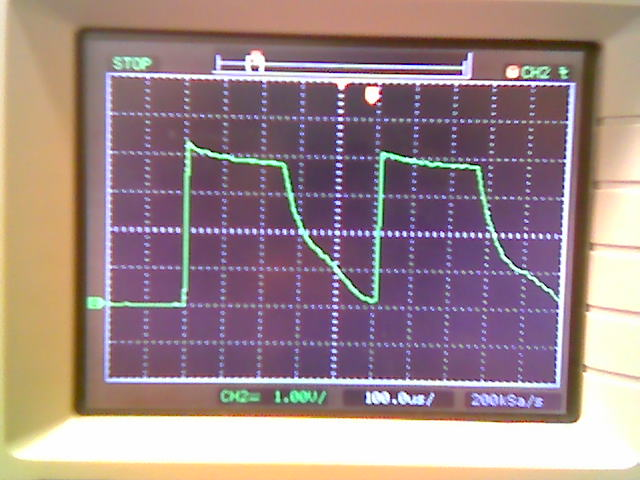
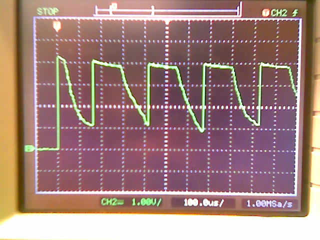

<!DOCTYPE HTML PUBLIC "-//W3C//DTD HTML 4.01 Transitional//EN">
<html><head><meta content="text/html;charset=ISO-8859-1" http-equiv="Content-Type">
  <title>LabNotes 20090307, Phoenix Project team</title></head>
<body style="background-color: rgb(255, 255, 255);">

<div class="Section1">
<blockquote style="margin-top: 5pt; margin-bottom: 5pt;">
  <h2 style="text-align: center;"><a name="mozTocId861890"></a></h2>

  <h2>
  <center><st1:city><st1:place><span style="color: rgb(0, 153, 0);"><font color="#009900">Phoenix</font></span></st1:place></st1:city><span style="color: rgb(0, 153, 0);"><font color="#009900">
Ambulatory Blood Pressure Monitor Project<br>

  <u>Sub-project: </u></font></span><span style="color: rgb(0, 153, 0); text-decoration: underline;" editable="true" id="SubprojectName">Timers On COTS Monitors, Phoenix Project team</span></center>

  </h2><br>Erik and I started characterizing the
(presumably piezoelectric) buzzer in the Omron Wrist Monitor.  We put
an oscilloscope on the buzzer.

<br><br>In image0001, we see that pulses come in pairs, about 1.15 seconds
apart.  The total voltage varies from 0 volts to 4 volts.  (One size
of the buzzer is connected directly to the battery ground.  We don't
know what the other size is connected to.)  During the first pulse of
a pair, the voltage varies from 0 to 4 volts, but during the second
pulse, the voltage varies from 1 volt to 4 volts.

<br><br><br><br>In image0002, we have a closer look at a pair of the pulses, and see
that they're 30 millisecond long overall, with a 30 millisecond pause
between them.  (The bottoms and tops of the pulses are pretty rough -
this is an artifact of the sampling rate or pixelated display of the
oscilloscope.)

<br><br><br><br>In image0003 we zoomed in on the start of the first pulse of a pair. 
The voltage is 0 volts to 4 volts, the peak lasts for 250
microseconds, and the separation between pulses is also 250
microseconds.

<br><br><br><br>In image0004 we zoomed in on the start of the second pulse of a pair. 
Each individual pulse here is 125 microseconds long, with 125
microsecond separation between them.  The voltage range of 1 to 4
volts is now explained: with only 125 microseconds available, the
voltage simply doesn't have time to drop all the way to zero.  (In
other words, the drop is following the same curve in the first and
second pulses of the pair.)  The first tiny pulse is consistently
different than the others, but in a way that I presume is irrelevant.

<br><br><br><br>-Larry

<br><br><h3><a name="mozTocId667544"></a><font face="Times New Roman">About
This Page</font></h3>

  <p>This page is maintained by <a href="mailto:labeaty@ieee.org?Subject=Data_Acquisition_Device_Prototype">Larry
A. Beaty</a>. &nbsp;It was last updated on 8 March 2009.</p>

  <p>The author(s) provide this information as a public service,
and agree to place any novel and useful inventions disclosed herein
into the public domain. They are not aware that this material
infringes on the patent, copyright, trademark or trade secret
rights of others. However, there is a possibility that such
infringement
may exist without their knowledge. The user assumes all responsibility
for determining if this information infringes on the intellectual
property rights of others before applying it to products or services.</p>

  <p>(C) 2009 Larry A. Beaty. Copying and distribution of this
page
is permitted in any medium, provided this notice is preserved.</p>

  <p></p>

  <center><a href="/hyde/">Back to the Phoenix
Home Page</a></center>

  <p></p>

  <p>&nbsp;</p>

</blockquote>

</div>

</body></html>